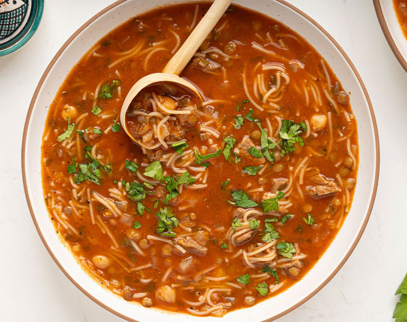

Home
Traditional Moroccan Harira (Lentil & Chickpea Soup)

Description
Follow these simple steps at home to make my Dad’s traditional Moroccan Harira, a warming soup made to break fast during Ramadan in Morocco (Iftar). This homemade soup combines chickpeas, beef, or lamb stew meat, and rice. It’s prepared stovetop, and takes just 45 minutes to prepare.
Ingredients
- 1 cup garbanzo beans (soak overnight if using dried)
- 454 g lamb or beef (stew meat cut into 2 inch cubes)
- 2 tablespoons olive oil
- 1 yellow onion, diced
- ½ cup cilantro, minced
- ½ cup parsley, minced
- 1 tablespoon pepper
- 1 tablespoon salt
- 2 teaspoons ginger (ground)
- 28 oz tomato puree
- 8–10 cups water
- 1 cup green lentils
- 1 cup fideo noodles, broken vermicelli noodles, or white rice
- 2 teaspoons cornstarch and 2 teaspoons water (optional)
Instructions
- If using dried garbanzo beans, soak in a bowl of water overnight.
- In a heavy bottomed soup pot, add the oil, chopped onion, diced meat, half of the cilantro & parsley, salt, pepper, and ginger.
- Sauté on medium high heat for 5-10 minutes or until the meat is browned and the onion translucent.
- Drain the garbanzo beans and add to the pot with the tomato puree and water. Bring the liquid to a boil then cover, lower and simmer for 25-30 minutes or until the garbanzos and meat are cooked through.
- In a small pot add lentils and cover with water. Bring to a boil, then cover and lower to a simmer for 15 minutes. Turn off the heat and set aside while you wait for the soup to be done.
- Optional: In a small bowl mix together cornstarch and cold water until no clumps remain. Uncover the soup and mix in the cornstarch water slurry to thicken.
- Finally, add noodles (or rice), strained lentils and remaining cilantro & parsley. Cook until the noodles (or rice) are done. Serve with a sprinkle of fresh cilantro and enjoy!